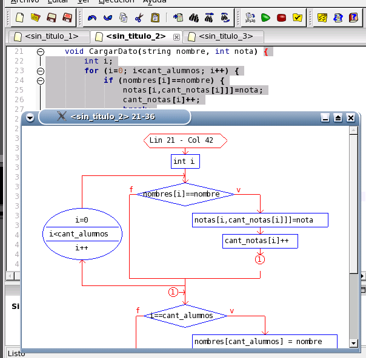

Finalmente, una característica adicional útil para algoritmos relativamente pequeños es la visualización del correspondiente diagrama de flujo. Dirijase, por ejemplo, al método "CargarDato" de la clase "Curso". Si selecciona la opción "Dibujar Diagrama de Flujo..." del menú "Ejecucion" podrá visualizar el diagrama correspondiente al bloque de código en el cual se encuentra el cursor (un bloque se delimita mediante llaves {}). Ubique el cursor inmediatamente después de la llave que abre el método y seleccione la opción "Generar Diagram de Flujo..." del menú "Ejecucion" para visualizarlo. Puede utilizar la rueda del mouse para agrandar o achicar el diagrama, y arrastrar y soltar para moverlo.

Volver... Más tutoriales...